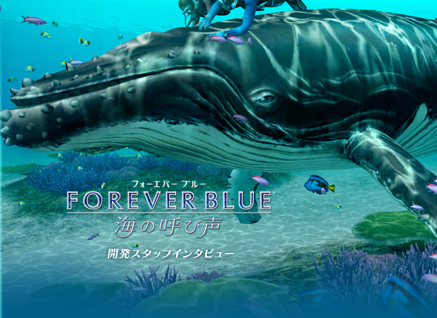
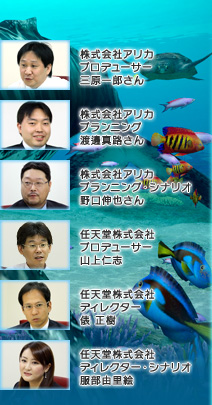
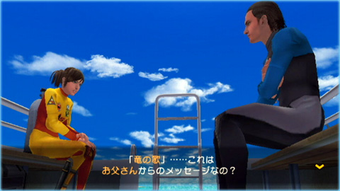
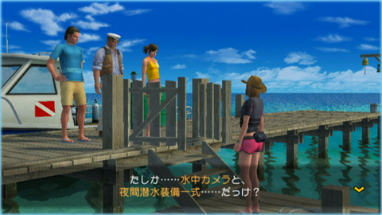
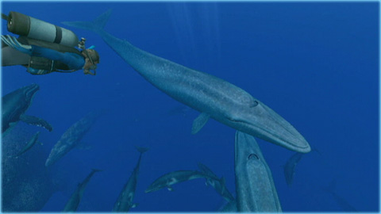

N.O.M
『FOREVER BLUE 海の呼び声』では、「竜の歌の伝説の謎を解く」という物語に沿ってゲームが展開します。
山上
『FOREVER BLUE 海の呼び声』では非常に広い面積の海を作っていまして、たくさんのイベントが盛り込まれています。ところが、「はい、自由に遊んでください」となると、どこからどう楽しんでいいのかわからなくなってしまったり、モチベーションを見つけるのに時間がかかってしまったりすると思うんです。そこで、そのガイドとしてストーリーを用意しました。ストーリーを先に進めていただくと、知らない間にさまざまな海にひそむいろいろな秘密のヒントが得られるという形にしたかったんです。そこから、クエストと呼ばれるさらに深いお話や、何かを集めたり、育てたりと興味の向くままに進めていけば、自然にこの海のすべてを楽しんでいただける、そんなワールドツアー的なイメージで、シナリオを担当した野口さんと服部にお願いしました。

服部
皆さんが海に期待するイメージと言うと、ロマンだったり、未知の部分だったりすると思うんです。私たちが知らないだけで、深海にはこんな生き物がいるかもしれないとか、遺跡だってあるかもしれない。そういうイメージを生かしつつも、現実離れしすぎないストーリーにまとめていきました。
最初にアリカさんから提案されたシナリオは、もっとファンタジックな感じでしたよね。
三原
どちらかと言えば私とかが「もっと不思議な思わせぶりなシーンを入れて」とか、いらぬ介入をしていましたね。でも、このゲームはリアリティを追求した作りなので、確かに冷静に考えると現実離れしすぎない路線の方がいいなということで。
ボツになったもので言えば、確か女性が海の上を歩いたりしていましたよ（笑）。服部さんからも「これはファンタジーすぎないかな？」って言われて。それでも2日くらいは抵抗してましたが。
渡邊
いや、2日じゃなかったような……（笑）。
服部
時空を超えてたりとかもしてませんでした？（笑）
海のロマンって、たとえば、海底に沈んでいるお皿1つ取っても、そこからお皿を使っていた人たちが昔どんな生活を送っていたのかなとか、実際の姿を想像できるところに感じるのかなと。現実から離れすぎると、それは海のロマンとは別のものになるんじゃないかなということで。
山上
ファンタジーなのは間違いないんですけどね。こんな話だったらあるかもしれない、現実にありそうな範囲での夢物語ということですね。はじめから空想世界を突っ走るというよりは、リアリティを持ったファンタジーをうまく作れたかなと思っています。
野口
とはいえ、最初から脚本があるというよりかは、あとからゲームの世界を楽しむのに最適なシナリオを、つまり、「プレイしてみると、こうだからと言って変えてみる」といった作り方をしています。
三原
今作ではストーリーをしっかりと表現するということが決まっていたので、最初にしっかりとしたお話を作ったのも間違いないんですよ。ただ、ゲームなので遊んでみると見せ場だと思っていたシーンが意外に地味だったり、逆にこのシーンが良いからここスタートにしたいよねとか調整していくと、つじつまが合わなくなってくるんです。
しかも、それと同時に僕と俵さんがシステムを作っていくので、写真撮影の説明をこのタイミングに入れてくださいとか言うわけです。（笑）
俵
「水族館」はこのタイミングで、とか。（笑）
去年の夏頃ですよね。ちょうど映像やシナリオなど一通りの素材はそろったんですけど、まだ何もつながっていない状態で。それで、三原さんと僕とでパズルを組み立てるように各素材をつなげていくんです。そんな中で「カメラはここで手に入るようにしよう」と決めるのです。

三原
そうなると野口が写真説明のイベントも作らないといけないわけですよね。ストーリーがあって、「そういえば写真が」って話をいかに自然に盛り込むか。野口は結構困ってたみたいですけど。
服部
野口さんもそうだと思うんですが、あくまでゲームのお話なので、お話だけを楽しんでもらいたいわけではなくて、ゲームのシステムも楽しんでいただきたいというのが一番にあるんです。「ストーリーはこうじゃなくちゃ嫌！」、というのではなく、水族館に行く動機や、世界中を旅することになる動機をどうやって与えようかということを考えながら、まとめていったということですね。
野口
だいたい、僕がまずこうしましょうというのを書くんですけど、いまひとつつながりのテンポが悪いなとなったときに、服部さんに「ここをもっと盛り上げてほしい」といったようなプロットを出していただきまして、さらに僕の方で「ここにはもうちょっと色気が欲しいな」とか、肉付けして、実装してプレイしてもらう。そして意見を交換して直して、というのをほんとに何度もグルグルグルグルと（笑）。
N.O.M
今作では、オープニングも印象的です。
三原
あのシーンも最初は技術的なデモだったんです。結果的には非常にインパクトがあって、そのままお話の導入部に持って行っても良いよねということになりました。

山上
このゲームには「欠点」があるんです。どういうジャンルのゲームかが一言で説明しにくいという欠点ですね。
オープニングにダイジェストとして、このゲームのテーマでもある大量のクジラや遺跡が登場したりします。その映像を見ていただくことで、そこに何かロマンを感じていただいたり、ゲームの世界を感じていただくことで、少しでも早くどんなゲームなのかを感じていただけるようにしたいと考えました。